即時監測使用教學
掌握台灣與日本最新地震動態，第一時間了解震央位置與震度資訊。
進入「即時監測」標籤
啟動 App 後，點擊底部導覽列的「即時監測」圖示，即可查看最新地震列表。點擊單一地震資訊，即會跳出詳細地震資料(包含:最大震度、震源、各地區震度...等資訊)
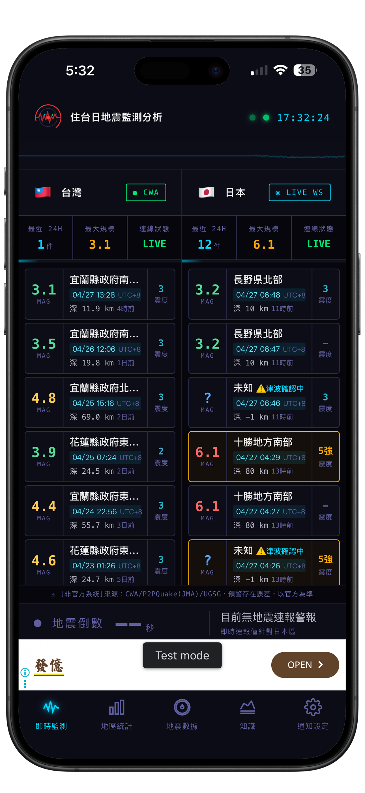
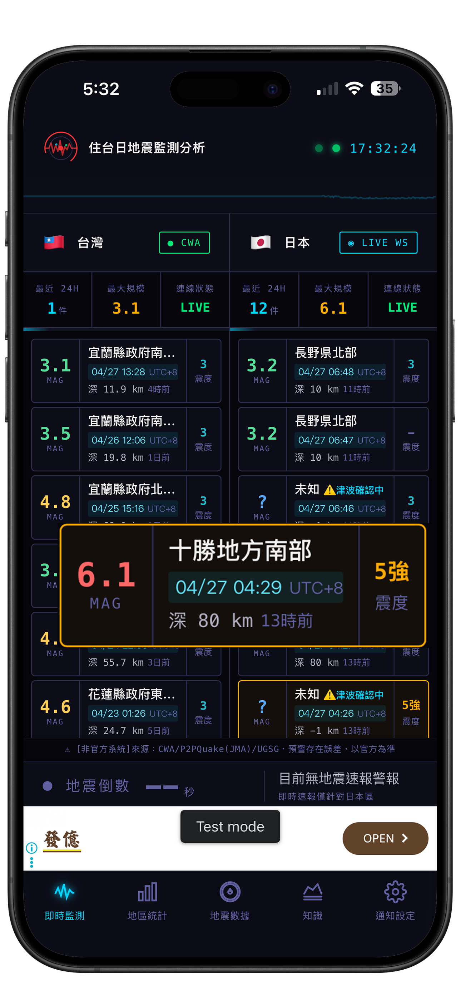
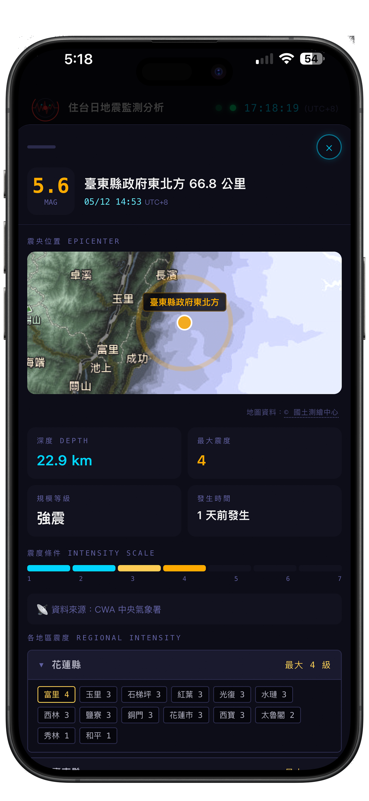
本 APP 為非官方服務，請以中央氣象署（CWA）及日本氣象廳（JMA）官方公告為最終依據。
地震預警EEW，僅限日本地區，台灣地區尚未有EEW預警通知。
地區統計說明教學
透過統計圖表，觀察各地震帶的歷史分布規律，了解哪些地區地震最頻繁。
開啟「地區統計」標籤
底部導覽列點擊「地區統計」，可看到台灣及日本最近100筆的地震資料，分布在哪一個地區，可協助判斷評估地震頻繁地區落於那裡，若未來有購屋需求以及旅遊需求都可提前做好心理準備措施。
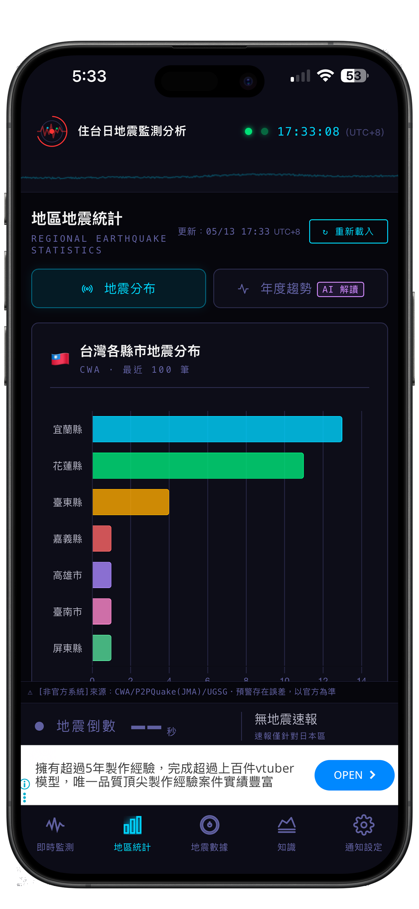
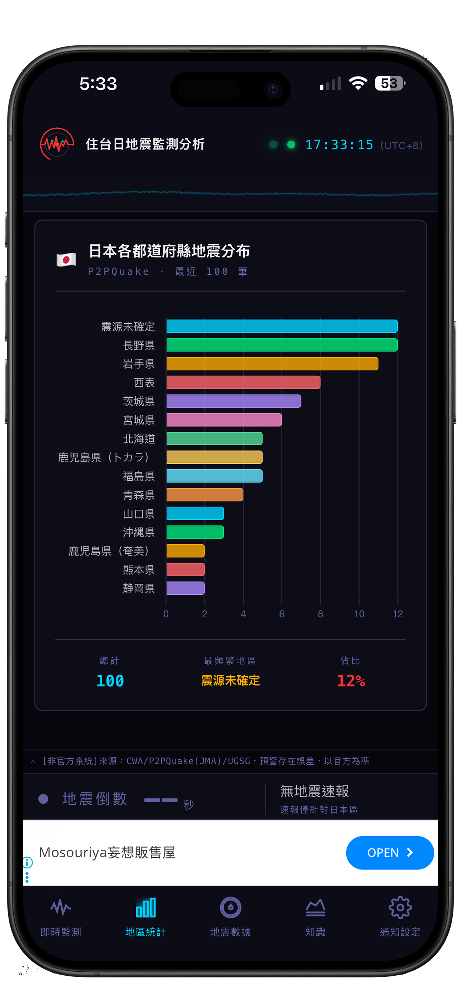
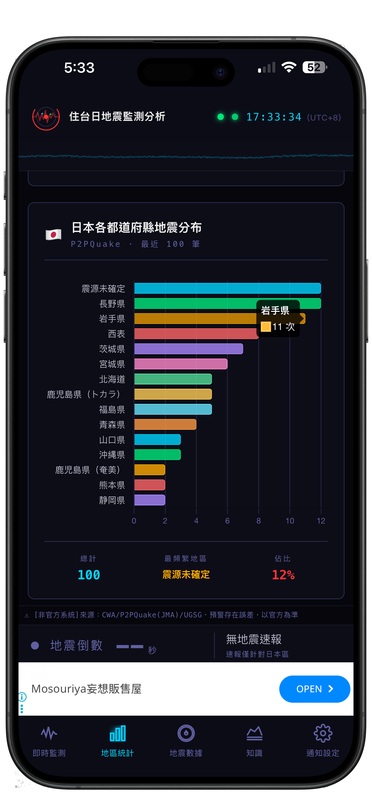
使用 AI 一鍵解讀
進入「地區統計」裡面的分頁「年度趨勢(AI解讀)」，選擇你想要查詢的趨勢條件，按下「確認查詢」下方即會顯示解讀相關資料，提供給各位參考。若只是減少年份，或是減少地區則系統不會要求重新查詢，但若需要更換地區以及年份時間，系統會要求重新查詢資料。
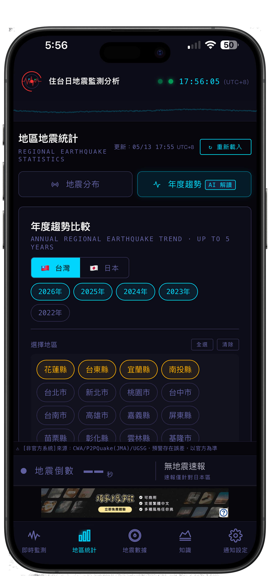
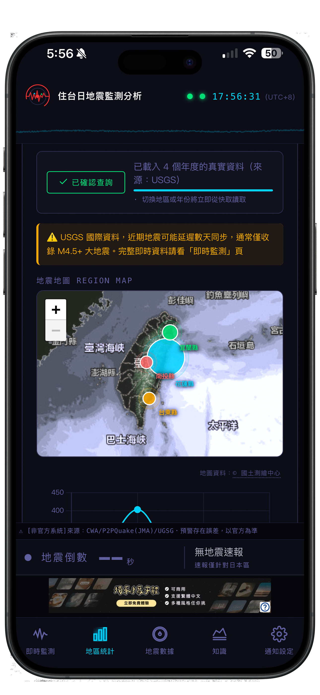
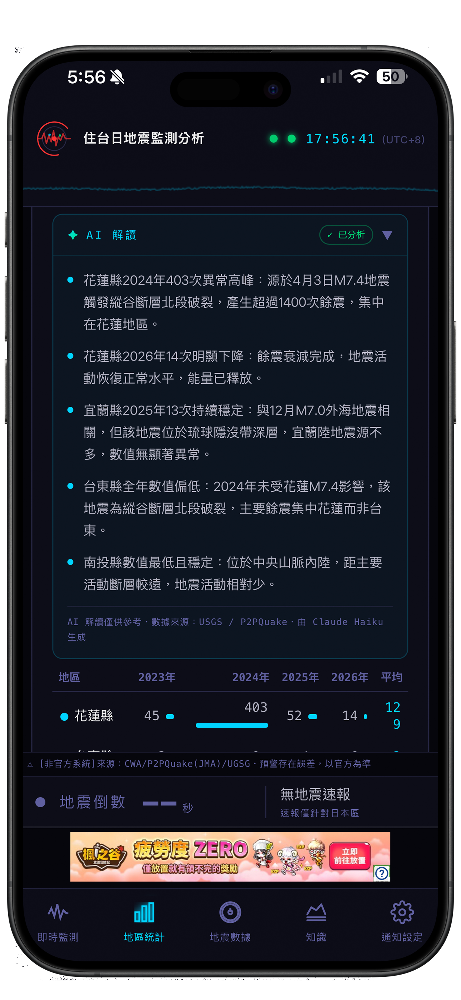
地震數據使用教學
主要可了解歷史地震數據，以及歷年地震數據的對比，可觀察在大地震後的地震頻繁狀態，與各地區的的影響參考資料。另包含 AI 自動協助解讀功能，也可以給各位當作一個參考資料。
台灣/日本，歷史數據皆使用USGS國際資料，可能會有延遲數天同步狀況，通常僅收錄規模4.5以上的大地震，日本當年度則是擁有較完整的資料，詳細完整資料可參考地震監測。
使用方式
可先選擇「國家」，接著選擇你想查看的「地區」，以及選擇要查詢的「地區」與「年度」
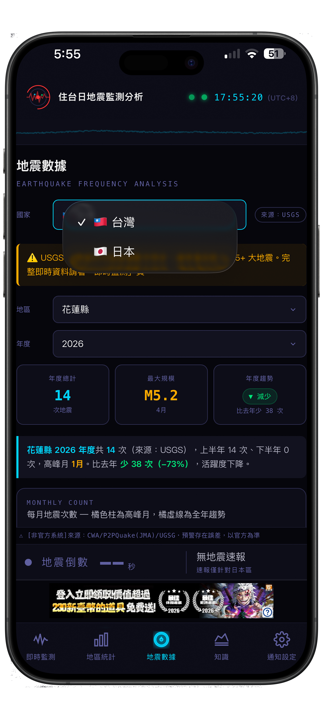
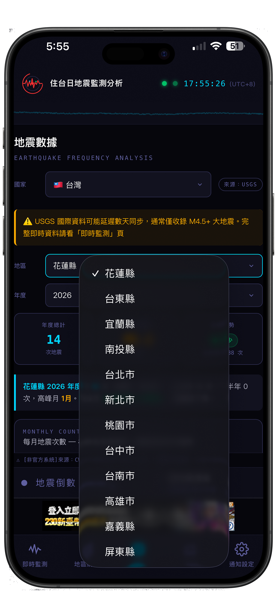
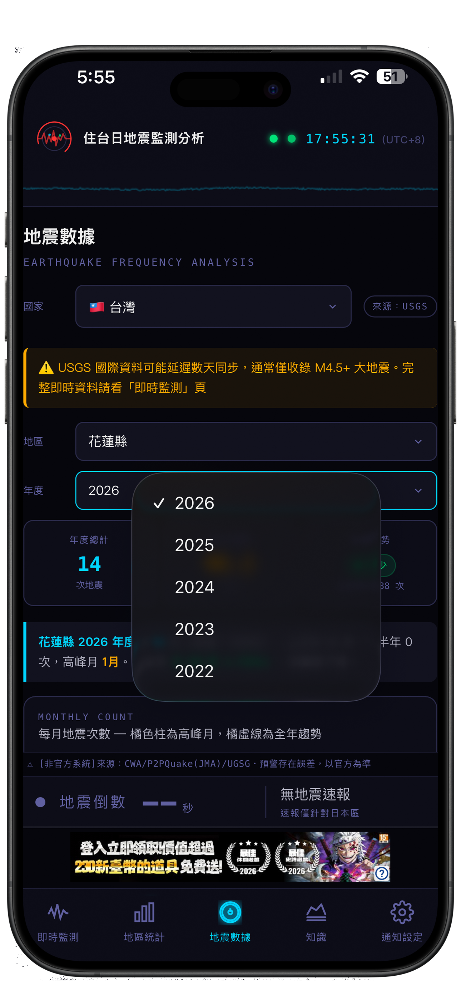
知識庫
地震防災知識與應變指南，讓你在地震來臨時知道該怎麼做，增加基礎知識降低恐懼感。
開啟「知識」標籤
導覽列點擊「知識」，內含防災指南、震度說明與地震科學...等等，可離線閱覽。
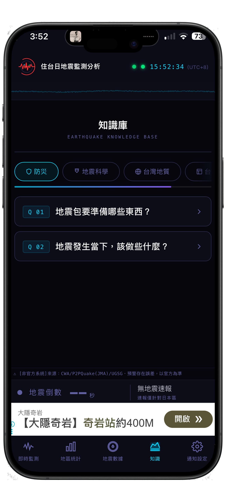
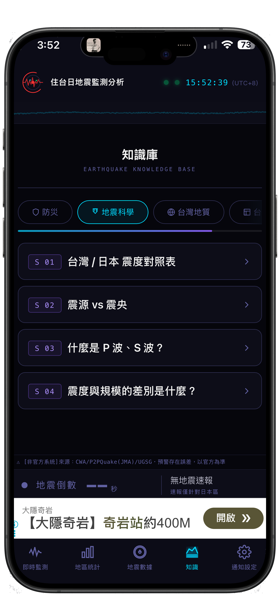
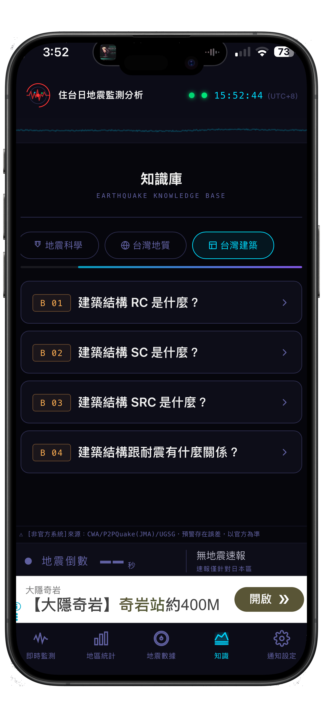
通知設定教學
自訂地震通知的觸發條件，確保重要資訊即時送達，同時避免低震度打擾。若希望關閉地區通知，可將"啟用"取消，即可關閉該國家地震通知。
開啟推播權限
首次開啟 App 時，系統會請求通知權限，請點選「允許」。若已拒絕，可至手機「設定 → 通知 → 台日地震監測」重新開啟。系統預設下載時都是「全地區」「震度3級」大家可自由至通知設定區域調整。
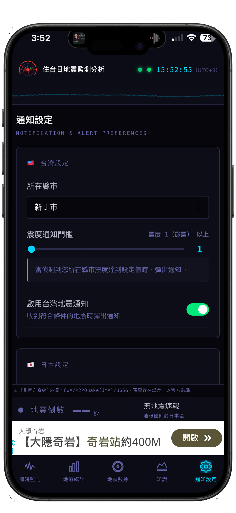
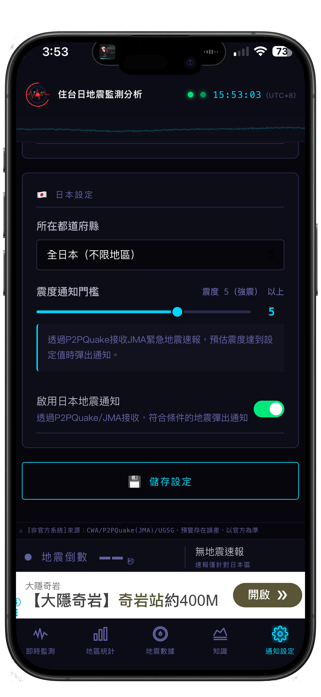
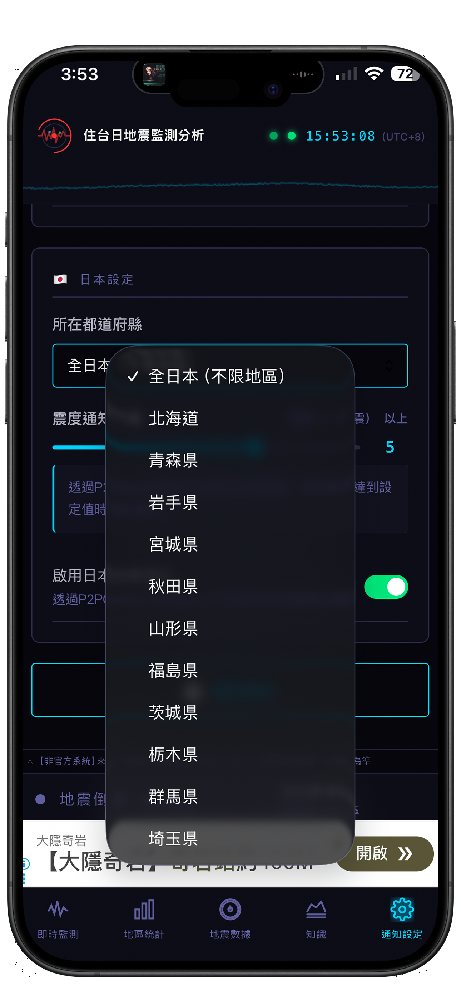
本 App 不使用 GPS 定位，通知地區篩選為手動選擇。推播速度受網路狀況與設備通知佇列影響，可能有數秒至數十秒延遲。